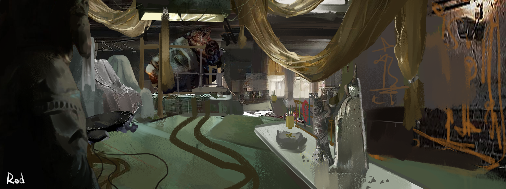

02 / Moving imageProcess
▶Process
Film
A short moving-image piece from the current collection. Play it here without leaving the portfolio.

Tiancheng Li / Portfolio 2026
I make visual worlds, playable experiments and tools for creative work.
Currently
Exploring how rough images, strange spaces and small interactions can become memorable worlds.
A layered, lived-in interior developed through light, texture and loose visual storytelling.
A short moving-image piece from the current collection. Play it here without leaving the portfolio.
About